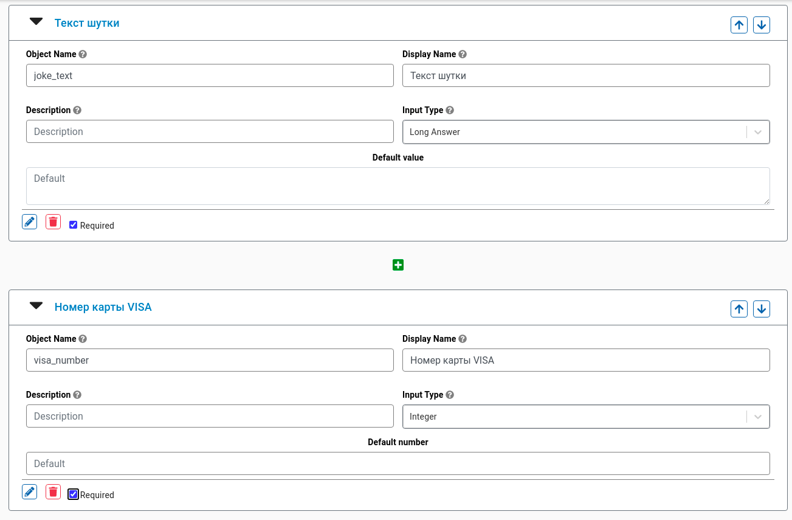
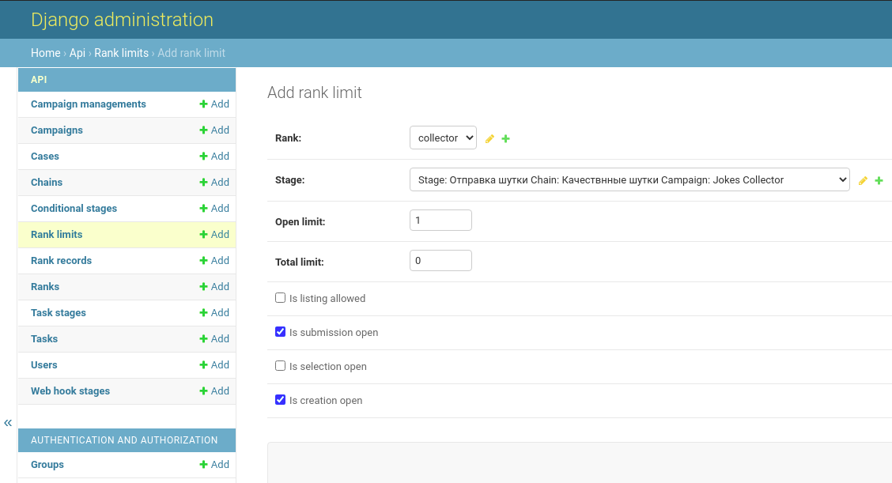
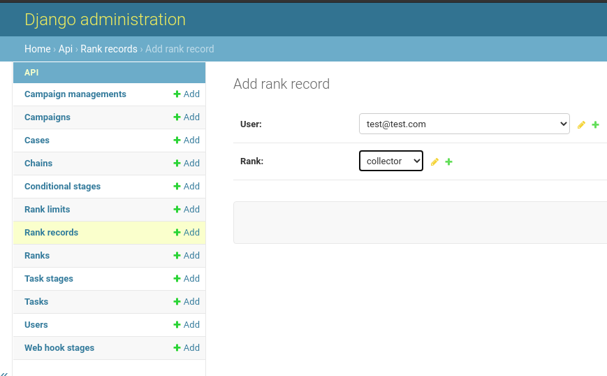

Настройка DEMO приложений¶
Вот мы и добрались до создания нашей первой логической цепочки задач. Наш DEMO бизнес-процесс будет выглядеть следующим образом: Пользователь отправляет шутку -> Верификатор проверяет шутку -> Если все хорошо, то бухгалтер выплачивает вознаграждение, для реализации данного бизнес-процесса нам необходимо создать нижеследующие элементы цепочки:
Создадим форму для отправки шутки пользователем
После отправки шутки пользователем - будем автоматически создавать задачу на “верификацию” шутки
Создадим условие “если шутка качественная”, тогда создать задачу на выплату вознаграждения
Создадим форму для выплаты вознаграждения
1. Giga Turnip Front End¶
Создание новой цепочки¶
Перейдите к приложению Giga Turnip Front End
Залогиньтесь через Log in
Создайте новую Кампанию Jokes Collector
Откройте созданную Кампанию и нажмите на “коробочку” слева (появится кнопка Add chain)
Создайте новую цепочку задач (Add chain)
Откройте созданную цепочку. C помощью данного интерфейса Вы можете создавать элементы (ноды) 2-х типов: Форма (Stage Node) и Условие (Logic Node)
Начальная форма¶
Для того чтобы создать начальную форму (форма отправки шутки пользователем), введите название формы в поле Label (например: Отправка шутки) и перетащите на свободное место кнопку Stage Node
Чтобы заполнить созданную форму полями - откройте (нажмите 2 раза) на нод “Отправка шутки”
В нашей форме нам не хватает 2 поля ввода: “поле куда пользователь впишет шутку” и “поле VISA number” для выплаты вознаграждения. Давайте добавим их
Для добавления нового поля нажмите на “зеленый плюсик”. Создайте 2 поля как на скриншоте:
Установите флажок Task is creatable (это значит что пользователь может сам создавать новые задачи на лету). Для сохранения формы нажмите Submit
Форма верификации¶
Создайте новую форму Stage Node Label=*Верификация шутки*. Добавьте в него поле “Шутка верифицирована”
Note
соедините созданные формы между собой стрелочкой
Logic node¶
Создайте новую форму Logic Node Label=*Переход к выплате*. Добавьте в него условие как на скриншоте:
Note
соедините созданные формы между собой стрелочкой
Форма выплаты вознаграждения¶
Создайте новую форму Stage Node Label=*Выплата вознаграждения*. Добавьте в него поле “Выплачено вознаграждение”
Note
соедините созданные формы между собой стрелочкой
2. Giga Turnip¶
Чтобы пользователь имел доступ к задачам - необходимо настроить Ranks (ранки)
Перейдите к приложению Giga Turnip на страницу admin
Ranks, Ranks Limit¶
Создадим новый ранк collector (этот ранк мы будем давать пользователям которые собирают шутки). Для этого перейдите в меню Ranks и добавьте новый ранк (Add rank)
Теперь необходимо настроить данный ранк (указать доступы формам и лимиты). Для этого перейдите в меню Rank limits и добавьте новый ранк (Add rank limit)
Ранк collector имеет доступ к форме отправке шутки, укажем это в настройках:
Аналогично создайте ранки accounter и verifier, настройки rank limits можете посмотреть в скриншотах:
Rank records¶
Для того чтобы назначить ранки пользователям, эти пользователи должны зарегистрированы в системе (сделать Log in в приложении Giga Turnip Task View)
Перейдите к приложению Giga Turnip Task View и сделайте Log in под пользователем который будет у Вас “Сборщиком шуток”
Сделайте Log out и опять Log in под пользователем который будет у Вас “Верификатором шуток”
Сделайте Log out и опять Log in под пользователем который будет у Вас “Бухгалтером”
После данных нехитрых манипуляций в системе Giga Turnip появятся данные пользователи. Теперь мы можем назначить каждому пользователю свой Rank. Перейдите в меню Rank records и назначьте каждому пользователю свой Rank
3. Giga Turnip Task View¶
Ну вот все и готово для тестирования пользовательского интерфейса!
collector¶
Перейдите к приложению Giga Turnip Task View и сделайте Log in под пользователем который будет у Вас “Сборщиком шуток”. После выбора Кампании Jokes Collector у пользователя появится возможность создавать формы для отправки шуток.
Нажмите на кнопку create, заполните поля и отправьте форму на проверку
verifier¶
Сделайте Log in под пользователем который будет у Вас “Верификатором”. После выбора Кампании Jokes Collector на вкладке ДОСТУПНЫЕ у пользователя появится возможность верифицировать формы которые были отправлены коллектором.
Нажмите на кнопку open, Oops! чтобы верифицировать шутку нам не хватает текста шутки из предыдущей формы. Давайте с Вами добавим отображение “предыдущей формы”
Перейдите к приложению Giga Turnip в меню Task stages и для формы Верификации укажите Displayed prev stages
Возвращаемся к приложению Giga Turnip Task View проверяем форму верификации. Стало гораздо лучше!
accounter¶
Сделайте Log in под пользователем который будет у Вас “Бухгалтером>”. После выбора Кампании Jokes Collector на вкладке ДОСТУПНЫЕ у пользователя появится возможность подтвердить оплату.
Нажмите на кнопку open, Oops! чтобы подтвердить нам опять не хватает данных из предыдущих форм (Вы уже умеете решать эту проблему)
Ура! На этом все!